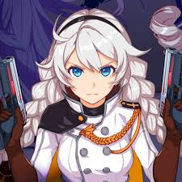

Aquí encotrarás los personajes principales de HI3RD
|
Personajes principales de HI3RD:
|
Kiana Kaslana

|
K-423, también conocida como Kiana Kaslana, es la heroína y personaje principal del juego "Honkai Impact 3rd".
Es una réplica de la 2.ª Herrscher con ADN de Kiana Kaslana. Su padre es el actual patriarca de la familia Kaslana: Siegfried Kaslana.
Su madre era Cecilia Schariac, conocida como la "Legendaria Mujer".
|
Raiden Mei
|
Raiden Mei es una de las protagonistas de Honkai Impact 3rd junto con Kiana Kaslana y Bronya Zaychik.
Es la 3.ª Herrscher de la Actual Era y parte del equipo de Sta. Freya.
|
Bronya Zaychik
|
Bronya Zaychik era una huérfana rusa que fue criada como asesina desde joven debido a las secuelas de la 2ª Guerra de Houkai.
Con el tiempo fue enviada a asesinar a Cocolia, un miembro de la Anti-Entropy. En lugar de matarla, Cocolia se apiadó de Bronya y la llevó a su orfanato.
Allí, Bronya fue sometida a experimentos, obteniendo el poder de utilizar la energía Houkai, levitar, manipular el Conejo Remodelado 19C y mucho más, pero perdió sus emociones y la capacidad de utilizar sus piernas debido al Experimento X-10.
Por orden de Cocolia, fue enviada al instituto St. Freya para espiar a Schicksal. Posteriormente, Bronya es conocida como la Herrscher de la Razón.
|
|
Click para inicio
Acá encontrarás info de la UTLD
Fin
|
|